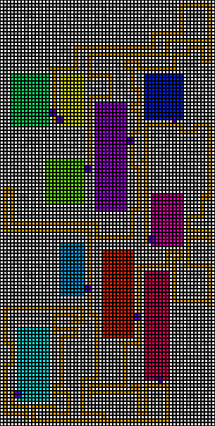

Monte Carlo im Dungeon

Der von mir neulich vorgestellte Dungeon-Generator war nur ein Schritt auf dem Weg: Ich wollte meine Studentenzeit aufleben lassen und einen Simulator bauen, in dem ich Monte-Carlo-Lokalisierung ausprobieren konnte...
Der Dungeon-Generator war erstellt - er musste aber noch visualisiert werden. Mein erster Versuch war in der Konsole und ergab etwas wie
0 1 2 3 4 5 6 7 8 91011121314151617181920
|*******|*******| ********|
|*-----*+------*| ------------- -------*|
|*|*|***| |*| |*****| | |*****|*|
|*|*|*--+ |*| +----*| | |*---*|*|
|*|*|*|*| |*| | | |*|*|*|*|
|*|*+-+*| |*+------ | | |*|*|*|*|
|*|*****| ******| | |*|***|*|
|*|*----+------ ------+ | |*+---+*|
|*|***** | | | | |*******|
|*+------ ----- | | +-----+ |*------|
|*| | |*****| | |*| | |***| |
|*| | |*----+ | |*| | +---+ |
|*| | |*****| | | | | | | |
|*| | +-----+-- --+-- | | +---- | | |
| | | |@ | | |
| ------+ ----------------+ +-------+ | |
| | |*********| | | |
| | ------+--***----+ | --------- | |
| | |*| |*|*|***| |*|*| |*| |
| | |*| |*+-+***| |*|*| |*| |
| | | |*****|*| |***| |*| |
| +-- | +-----+*| +--*| |*| |
| | | | | |***| |*| |
| | --+ | ----- +-- --+---+-- --+-+ |
| | |*| |***| |*| |
| | |*+------ +--*| |*| ----- ----------|
| | | |* | | | |
| | | --------- +---- | | | ------- |
| | | |*| | | | | | |***| |
| | | |*| | | | | | |***| |
| | | | | | | | | |*|*| |*|
| | +-- | | | | +-----+ |*|*| +-|
| | |*| | | | ****| |*|*| |
| | |*| ------+ +-----+-- ----+ |*+-+-- |
| | |***| | | |*****| |
| | +---+ ----- | ----- | ------+----*| |
| | |*****| |***| |*************| |
| +-------+-----+ |*--+ +-------------+ |
| |*** |
+-----------------+---------------------|
Zweidimensional und bunt wurde daraus:

Beispiel für einen generierten Dungeon Dann erinnerte ich mich an eine Technik, die unter anderem bei den ersten Spielen eingesetzt wurde, die dem Spieler den Eindruck vermittelten, unmittelbar im Geschehen zu sein - Stichwort: First-Person-Perspective: Es geht natürlich um Raycasting. Das ist schnell implementiert - ich habe mich natürlich von dem einen oder anderen Quelltextschnipsel aus dem Internet inspirieren lassen.Dann hatte ich alle Voraussetzungen zusammen: Ich trage mich schon Jahre mit dem Gedanken, einen Simulator für autonome Agenten zu bauen - ich weiß, dass es das bereits gibt, aber ich lerne eben gern und richtig lernen kann man nur, wenn man selber tätig wird! Der Simulator sollte die Umgebung des Agenten visuell erfahrbar machen, die Umgebung sollte einfach neu gestaltbar sein und ich wollte in der Lage sein, unkompliziert verschiedenste Algorithmen damit auszuprobieren.
Die Umgestaltung der Umgebung war durch den Dungeon-Generator erfüllt - schließlich produziert der jedesmal ein anderes Labyrinth.
Die visuelle Erfahrbarkeit war durch das Raycasting dieser Labyrinthe gegeben.
Die Einsetzbarkeit verschiedenster Algorithmen kommt dadurch zustande, dass ich das Projekt und damit die Architektur und sämtliche Quelltexte in der eigenen Hand habe.
Als Test habe ich eine Monte-Carlo-Lokalisierung umgesetzt: Der Agent wird irgendwo im Labyrinth abgesetzt und weiß zunächst nicht, wo er sich auf der Karte befindet, die ihm ebenfalls ausgehändigt wird. Das Ziel ist nun, irgendwie herauszufinden, wo er sich im Labyrinth befindet.
Dies wird dadurch erreicht, dass der Agent eine große Anzahl (konkret 200) Hypothesen aufstellt, die in der vorliegenden Aufgabe aus drei Parametern bestehen: zwei Koordinaten für die Position und ein Winkel für die Blickrichtung.
Der agent verfügt über eine Anzahl Entfernungssensoren, die den in Blickrichtung liegenden Bereich abtasten können.
Bewegt sich der Agent nun, kann er die Ergebnisse der Sensoren mit denen vergleichen, die sich für die Hypothesen ergeben. Sind sie sich ähnlich, könnte es sein, dass diese Hypothese stimmt und sie wird wertvoller. Stimmen sie nicht überein, besteht eine hohe Wahrscheinlichkeit dafür, dass die jeweilige Hypothese falsch ist und ihr Wert verringert sich.
Nachdem so alle Hypothesen bewertet worden sind, werden einige, die besonders wenig wert sind, verworfen und durch neue ersetzt die zufällig, aber in der Nähe der bisher besten initialisiert werden.
Dieser Zyklus von der Bewegung über die Messung der Sensoren und die Bewertung der Hypothesen wird immer wieder wiederholt. Irgendwann ballen sich Hypothesen an einer Stelle zusammen - das ist die aktuelle Position des Agenten.
In diesem Video sieht man ein Labyrinth in der Minimap, auf der auch die Hypothesen in Pink überlagert sind: Je länger eine Hypothese unter den besten ist, desto höher ist ihre Deckkraft bei der Darstellung.
Anfangs sieht man in der 3D-Darstellung, dass der Agent in einem Raum platziert worden ist - daher auch gleich zu Beginn die Ballung der Hypothesen in einigen der Räume des Labyrinths.
Nachdem sich der Agent aus dem Raum heraus und in einen Gang bewegt sieht man, dass die Hypothesen in den Räumen schnell sterben und durch neue ersetzt werden. In Sekunde 17 habe sich zwei ungefähr gleichstarke Rudel von Hypothesen herausgebildet, die aber beide vermuten, dass es am Ende des Ganges nach rechts geht.
Diese Hypothese stellt sich als falsch heraus. Nach 35 Sekunden haben sich wiederum zwei Rudel gebildet, die diesmal gegensätzliche Meinungen vertreten: Eines denkt, dass es am Ende des Ganges nach rechts geht und das andere ist fest davon überzeugt, dass der Gang nach links abbiegt.
Die Hypothesen beider Rudel müssen erkennen, dass sie falsch liegen. Nach 49 Sekunden hat sich wieder eine Meinung herausgebildet, der viele der Hypothesen anhängen (mittig oben in der Minimap).
Nach 55 Sekunden konkurrieren einige Rudel - alle nehmen an, dass man sich in einem langen Gang befindet.
Nach 63 Sekunden bleiben davon nur noch zwei übrig.
Am Ende des Videos hat der Agent seine Position korrekt in der rechten oberen Ecke der Minimap detektiert.
Artikel, die hierher verlinken
Visualisierung von Höhenfeldern mittels Voxeln
08.10.2017
Nachdem ich in letzter Zeit mit Visualisierungsalgorithmen aus meiner Jugend und alternativen Visualisierungen für generierte Landschaften experimentiert habe, habe ich nunmehr beides gleichzeitig getan und den guten alten Voxel-Algorithmus wieder entstaubt.


Vor 5 Jahren hier im Blog
-
GC und beliebige Präzision in Java
24.11.2018
Das letzte Mal, als ich über Vor- und Nachteile der Durchführung mathematischer Berechnungen mit verschiedenen Datentypen schrieb, vernachlässigte ich einen Aspekt, dessen Einfluss und Wichtigkeit von der benutzten Programmiersprache und konkreten Implementierung abhängt:
Weiterlesen...
Tags
Android Basteln C und C++ Chaos Datenbanken Docker dWb+ ESP Wifi Garten Geo Git(lab|hub) Go GUI Gui Hardware Java Jupyter Komponenten Links Linux Markdown Markup Music Numerik PKI-X.509-CA Python QBrowser Rants Raspi Revisited Security Software-Test sQLshell TeleGrafana Verschiedenes Video Virtualisierung Windows Upcoming...
Neueste Artikel
- Assertions für XML-Generierung nutzen
Neulich habe ich den Entschluss gefasst, meinen Generator für XML aus vorgegebenen XML-Schemas zu erweitern: Ich wollte versuchen, den Generator um Unterstützung für Assertions zu ergänzen
Weiterlesen... -
 Online Werkzeuge
Online Werkzeuge
Eine Liste interessanter Werkzeuge zur Benutzung "on the road"...
Weiterlesen... - DynamicMBean Wrapper für JavaBeans
Nachdem ich meine Forschungen zu Annotations und BeanInfos für JavaBeans abgeschlossen hatte, entschloss ich mich ein weiteres Projekt zum Abschluss zu bringen, das bereits geraume Zeit geduldig im Backlog meiner Aufmerksamkeit harrte...
Weiterlesen...
Manche nennen es Blog, manche Web-Seite - ich schreibe hier hin und wieder über meine Erlebnisse, Rückschläge und Erleuchtungen bei meinen Hobbies.
Wer daran teilhaben und eventuell sogar davon profitieren möchte, muß damit leben, daß ich hin und wieder kleine Ausflüge in Bereiche mache, die nichts mit IT, Administration oder Softwareentwicklung zu tun haben.
Ich wünsche allen Lesern viel Spaß und hin und wieder einen kleinen AHA!-Effekt...
PS: Meine öffentlichen GitHub-Repositories findet man hier - meine öffentlichen GitLab-Repositories finden sich dagegen hier.